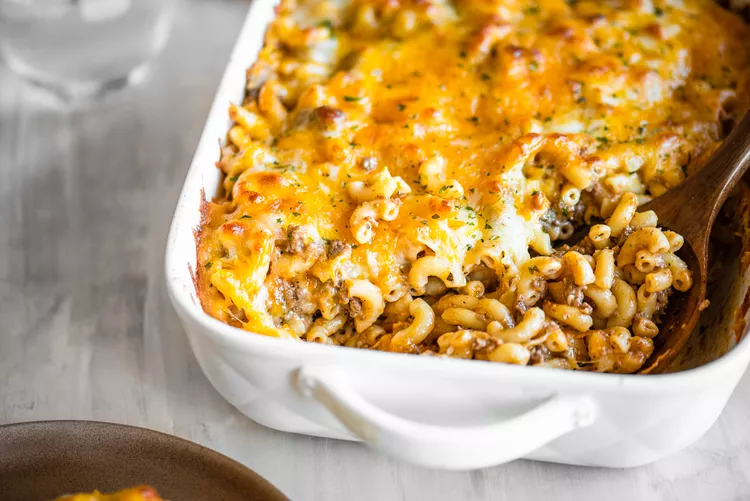

COMFORT EATS
"Welcome to Comfort Eats - where every dish is crafted to soothe the soul and tantalize the taste buds! Our passion lies in creating comforting recipes that evoke nostalgia, warmth, and a sense of well-being with every bite. Whether you're craving a hearty meal to cozy up with on a chilly evening or seeking a sweet treat to indulge your senses, you've come to the right place.
~~Introducing our signature Comfort Eats "CHEESEBURGER CASSEROLE"
Cheeseburger-Casserole
PREP TIME(15 MINS)
|
| COOK TIME(30 MINS) |
| TOTAL TIME(45 MINS) |
| SERVINGS( 6 to 8 servings) |
~Ingredients
- 12 ounces (340g) dried elbow macaroni (about 6 cups dry pasta)
- 1 1/2 pounds ground beef (I like 80:20)
- 2 teaspoons oregano
- 1 teaspoon sea salt, plus more as needed for salting the pasta water
- 1 teaspoon black pepper
- 1 teaspoon chili powder
- 1 teaspoon ground cumin
- 2 teaspoons butter
- 1/2 cup chopped yellow onion
- 1 tablespoon minced garlic
- 1/4 cup tomato puree
- 1 1/2 cups heavy cream
- 1/4 cup chicken stock
- 1/2 teaspoon dried parsley
- 1/2 teaspoon dried basil
- 2 cups shredded Monterey Jack cheese, divided
- 2 cups shredded cheddar cheese, divided

~~METHOD:
~Preheat the oven to 400°F.
~Boil the pasta:
Put a large pot of salted water on to boil (1 tablespoon salt for every 2 quarts of water).
Once the water has reached a rolling boil, add the dry pasta, and cook, uncovered, stirring occasionally, about 9 to 11 minutes, until mostly cooked through but still a bit firm to the bite.
Using a colander, drain and set to the side.
~ Cook the ground beef:
As the pasta cooks, heat a large skillet over medium heat and add the ground beef.
Season with oregano, sea salt, black pepper, chili powder, and ground cumin. Cook, stirring occasionally, until the beef is browned and no longer pink, about 5 minutes.
~ Add the butter and aromatics:
Add the butter, onions, garlic, and tomato puree to the skillet with the ground beef. Stir until all ingredients are combined.
~Combine the pasta and ground beef:
Add the cooked pasta to the beef mixture and stir to combine. Add the heavy whipping cream, chicken stock, parsley, basil, 1 1/2 cups of the shredded Monterey Jack cheese, and 1 cup of the shredded cheddar cheese. Stir until combined.
~ Add to a casserole dish:
Transfer to a 9x13-inch casserole dish (no need to grease) and top with the remaining cheese.
~Bake:
Bake the casserole for 15-20 minutes, until the cheese is browned and bubbly.
~Serve and store:
For a looser casserole, serve right away. For a casserole that holds its shape a bit, let sit 10 minutes before serving.
The casserole will keep, refrigerated in an airtight container, for 3-4 days.
You can also freeze it by storing it in an airtight container for up to 3 months. To reheat, microwave or place in the oven at 350°F oven until it is heated through (this will depend on the portion size you are reheating).